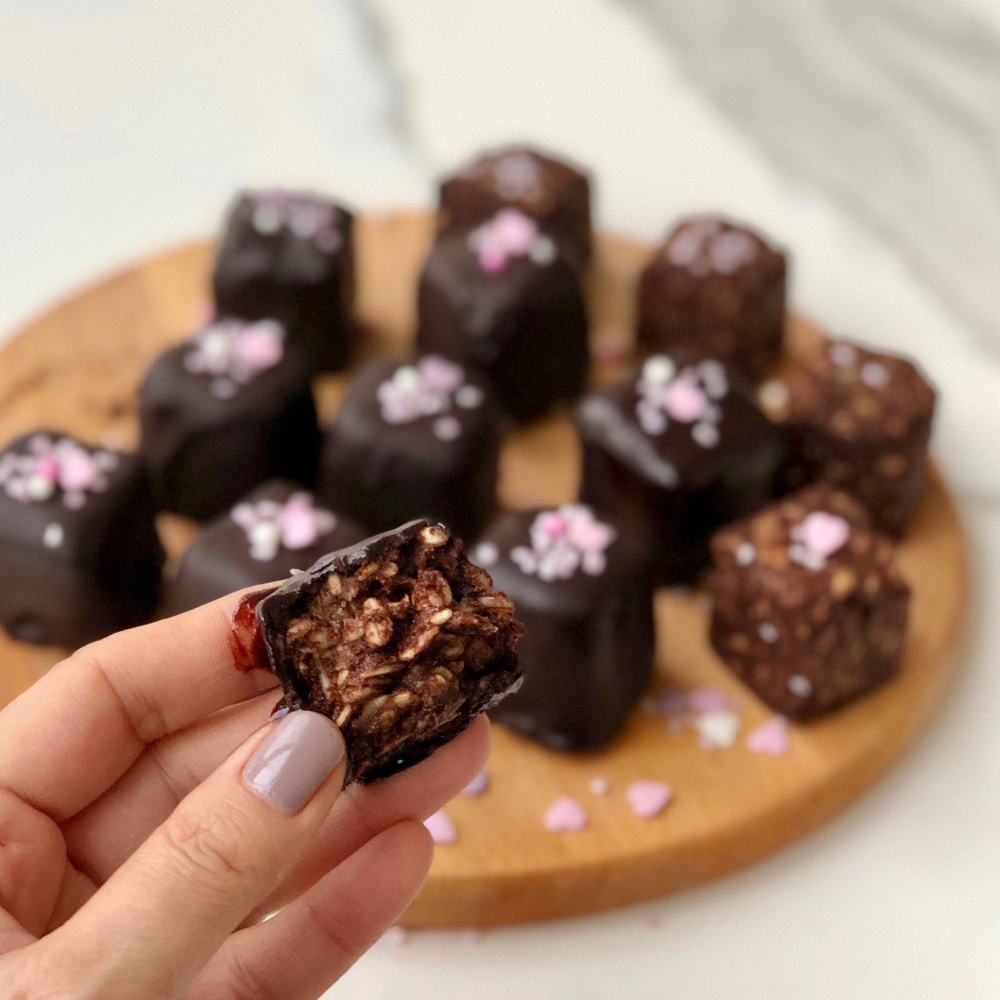

Çikolata Küpleri
Çikolatalı ve şam fıstıklı tadımlık lezzetler...

Yalnızca 4 malzeme ile hazırlanan çikolata küpleri,renkli kağıtlarda veya kürdan batırılarak
servis edilir.
Özellikle kalabalık sofralarda yer verilen çikolata küpleri,doğum günü gibi özel etkinliklerde de kullanılabilir.
Tarif: Oğuzhan BIYIKLI
Kaç Kişilik: 4 kişilik
Hazırlama süresi: 30 dakika
Pişirme süresi: 10 dakika
Çikolata Küpleri İçin Malzemeler:
- 350 gr bitter çikolata
- 150 ml krema
- 1 çorba kaşığı tereyağı
- 150 gr şamfıstık (Badem veya fındık da olabilir.
Çikolata Küpleri Nasıl Yapılır?
- Bitter çikolatayı benmari usulü eritin
- Eriyen çikolatanın üzerine krema ve tereyağını ekleyip iyice karıştırıp tencereyi bir tezgaha alın
- Şamfıstıklarını havanda çok az dövüp irili ufaklı parçalara bölün.
- Ufalanan fıstıkları çikolatalı karşıma ekleyip karıştırın.
- Hazırladığınız çikolatayı varsa alüminyum hazır bir kare tepsiye,yoksa kenarlarından taşarak yağlı kağıt yerleştirdiğiniz küçük bir tepsiye dökün.
- Buzdolabında iki saat bekletin
- Çikolatayı kalıptan çıkartın Kare parçalara bölün.